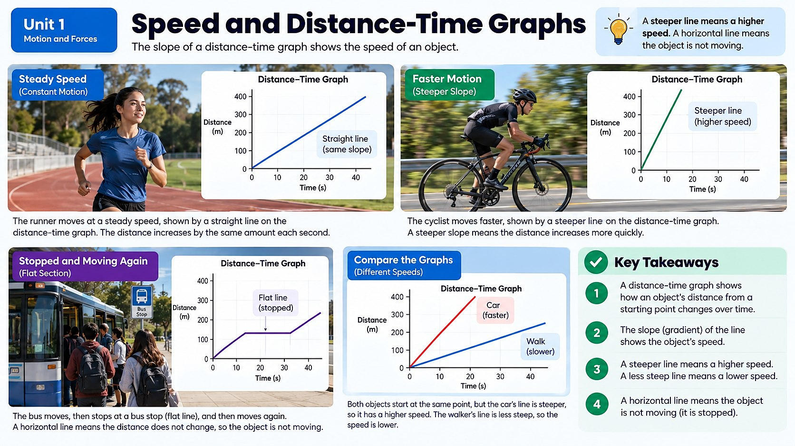

Could you have predicted exactly how the crash would unfold just by looking at a graph of the car's motion before impact?

Turning Motion into Numbers
Once you know how to describe motion using a frame of reference, the next step is measuring it. Speed tells you how quickly an object's position is changing — specifically, how much distance it covers in a certain amount of time. If the truck in our crash scenario travels 60 meters in 3 seconds, its speed is 20 meters per second. That single number lets you compare the truck's motion to a bicycle, a sprinting cheetah, or another car, no matter how different those situations look.
Speed is calculated by dividing distance traveled by the time it took: speed = distance ÷ time. It sounds simple, but this one relationship is the foundation for predicting almost everything about how objects move, including how much time a driver has to react before hitting something.
There's an important detail hiding inside that simple formula, though: the speed you calculate this way is really an average speed over the whole trip, not necessarily the speed at any single instant. The truck almost certainly wasn't moving at exactly 20 meters per second the entire time — it might have been going a little faster during one second and a little slower during another. To know its exact speed at one specific moment, like the split second right before impact, you'd need its instantaneous speed, which is the speed at that precise instant rather than averaged over the whole trip. Speedometers in real vehicles are built to show instantaneous speed, updating constantly so a driver always knows how fast they're going right now, not just on average since they left the driveway.
Reading a Distance vs. Time Graph
Numbers are useful, but graphs let you see motion at a glance. A distance vs. time graph plots how far an object has traveled (on the vertical axis) against how much time has passed (on the horizontal axis). The steepness of the line — its slope — tells you the object's speed. A steep line means the object is covering a lot of distance in a short time, so it's moving fast. A flatter line means it's moving slowly, and a perfectly flat, horizontal line means the object has stopped completely.
If you saw a distance vs. time graph for our crash-test truck, you'd expect to see a fairly steep, straight line right up until the moment of impact — and then the line would go completely flat, because the truck's distance from its starting point stops increasing the instant it slams into the pole. That sudden change in slope, from steep to flat, is a graph's way of showing a sudden, dramatic stop.
You can actually calculate a precise speed straight off a graph using just two points on the line. Pick any two points, find how much the distance changed between them (the "rise") and how much time passed between them (the "run"), and divide rise by run. Suppose the graph shows the truck at 40 meters after 2 seconds, and at 100 meters after 5 seconds. The rise is 100 minus 40, or 60 meters, and the run is 5 minus 2, or 3 seconds. Dividing 60 meters by 3 seconds gives 20 meters per second — the exact same math as the basic speed formula, just read straight off a graph instead of a stopwatch.
Using Graphs to Predict a Crash
Here's why this matters beyond just reading charts: if you know an object's speed and its distance from an obstacle, you can predict when and how hard it will hit. Engineers and safety researchers actually do this kind of analysis using real recorded motion data. Tools like Vernier Graphical Analysis let scientists and students collect motion data from sensors — for example, tracking a toy car rolling toward a barrier — and instantly turn that data into a distance vs. time graph.
By studying the slope of that graph, you could estimate the truck's speed in the seconds before the crash and use it to predict how much force the impact would involve. This is exactly the kind of thinking real crash-safety engineers use to design safer cars, better seatbelts, and smarter warning systems.
What a Curved Line Tells You
So far, every graph in this chapter has shown perfectly straight lines, which only happens when an object moves at a constant, unchanging speed. But real motion is often messier than that. If the truck was speeding up in the moments before the crash, its distance vs. time graph wouldn't be a straight line at all — it would curve, getting steeper and steeper as time goes on. That's because the truck is covering more distance in each additional second than it did in the second before, which means its slope, and therefore its speed, keeps increasing.
A line that curves the other way, getting flatter and flatter, would mean the truck was slowing down, covering less distance in each additional second. Learning to recognize these curved shapes is just as important as reading straight lines, because most real-world motion — a car pulling away from a stoplight, a ball rolling down a hill, or yes, a truck losing control before a crash — involves speed that's constantly changing rather than staying perfectly steady.
Distance vs. Time for Three Speeds
Real-World Connections
GPS Watches on the Track
Runners and cyclists wear GPS watches that record their position every second. Coaches download that data and plot it as a distance vs. time graph to see exactly where an athlete sped up, slowed down, or held a steady pace.
Automated Highway Speed Cameras
Some highways use two cameras a known distance apart; if a car passes both faster than the time limit allows, the system calculates its average speed automatically — the same distance-over-time math as reading a graph's slope.
Meet the Scientist
Sports Performance Analysts
Sports scientists use graphs just like the ones in this chapter to help elite athletes improve. By studying a distance vs. time graph from a 400-meter race, an analyst can pinpoint the exact stretch of track where a sprinter lost speed and design a specific drill to fix it — turning a line on a graph into a training plan.
Key Vocabulary
Bold, underlined words in the reading above are clickable too — tap one to see its definition pop out. Or click or tap a card below to reveal the definition.
Explore More
Speed and Average Speed | Middle School Science | Khan Academy
Distance-Time Graphs: Speed and Acceleration on a Graph
Chapter Review
1. How is speed calculated?
2. On a distance vs. time graph, what does a steeper line represent?
3. What would a distance vs. time graph look like right after the truck crashes into the pole and stops?
4. A car travels 100 meters in 5 seconds at a constant speed. What is its speed?
5. Why might engineers use tools like motion sensors and graphing software to study a crash?
California Science Test (CAST) Practice
Investigators reviewed the event data recorder from the truck involved in the crash. The table below shows the truck's total distance traveled, measured from a fixed starting point, during the four seconds leading up to the moment of impact.
| Time (s) | Distance Traveled (m) |
|---|---|
| 0 | 0 |
| 1 | 18 |
| 2 | 36 |
| 3 | 54 |
| 4 | 72 |
Which claim about the truck's motion during these four seconds is best supported by the data in the table?